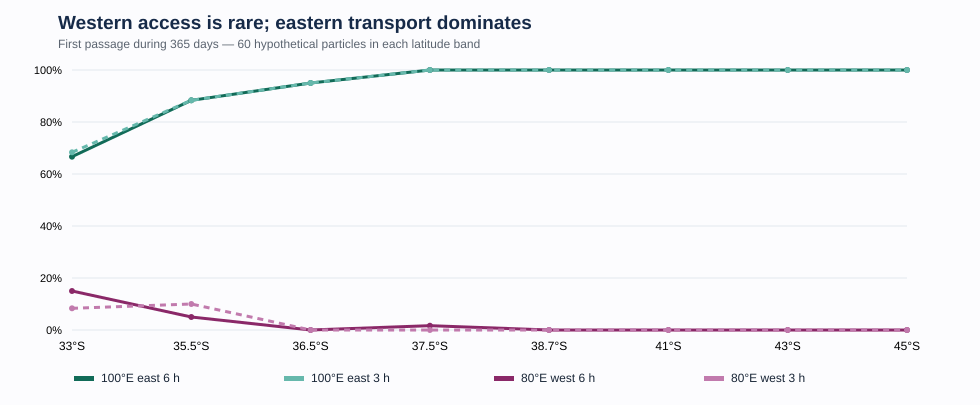
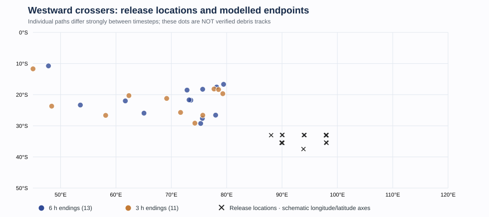
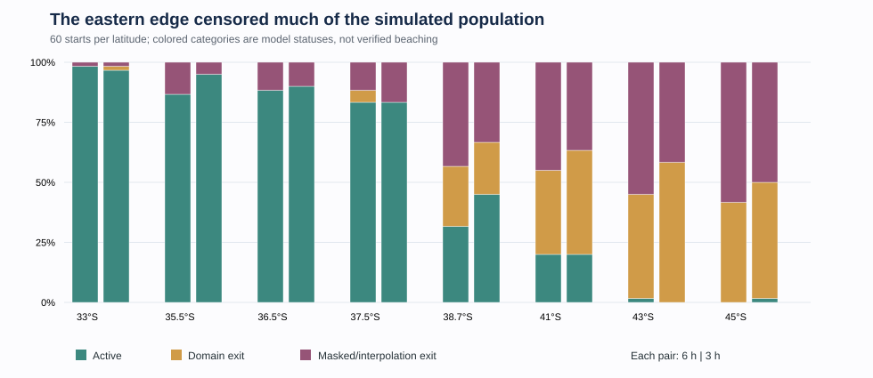

Where did the Indian Ocean take the debris?
A forward-transport experiment using actual 2014–15 daily GLORYS currents finds abundant looping, southward excursions and westward reversals—but few particles reached the western Indian Ocean within the first year. This is a circulation result, not an MH370 crash-location inference.
1. A strong eastward tendency, with rare western access
The modeled releases cover 33–45°S and 85–98°E, each with 12 initial positions within about 5 km of its cell center. They are a deliberately exploratory circulation survey, not a distribution of aircraft crash locations. The same 481 seeds were used in both timestep runs.


group_summary.csv data. The slight 37.5°S western crossing at 6 h means the westward fraction is not strictly monotonic.Across the full ensemble, 451 versus 452 particles crossed 100°E eastward. By contrast, 13 versus 11 reached 80°E westward, 4 versus 5 reached 70°E, and only 1 versus 2 reached 50°E. Crossing a longitude is not a beach arrival.
| Gate | 6 h | 3 h |
|---|---|---|
| 100°E east | 451 | 452 |
| 80°E west | 13 | 11 |
| 70°E west | 4 | 5 |
| 60°E west | 2 | 3 |
| 50°E west | 1 | 2 |
2. The western path mainly goes north before going west
Particles that did reach the western gates generally migrated equatorward, then entered westward transport along the subtropical gyre's northern limb. This was not a persistent southern loop. The individual destinations are extremely sensitive to numerical integration, so the figure below deliberately shows release points and modelled last positions only, not invented reconstructions of real debris paths.


The southern cartwheel idea was therefore partly right about circulation, but not supported as a westward-delivery mechanism in the first year. The analysis found prolonged temporary reversals and returns to earlier positions, although an eddy-residence diagnostic alone does not establish a coherent material barrier.
3. The eastern boundary is the largest geographical limitation
The current dataset ends at 119.9167°E. At year-end, 235 particles in the 6 h run and 222 in the 3 h run had stopped because they left the data domain or entered masked/invalid velocity cells. Some masked cells lie near Australia's coast; they are not automatically beachings. For particles terminated at the artificial eastern edge, the model says nothing about their eventual return or destination.


| Status | 6 h | 3 h |
|---|---|---|
| Still active | 246 | 259 |
| Geographic domain exit | 91 | 105 |
| Mask or interpolation exit | 144 | 117 |
This is why zero recorded western crossings from a southern release group must not be read as a permanent exclusion: much of its population ceased being observed within the numerical domain before the end of the year.
4. What did the numerical refinement establish?
A full second year-long integration at a 3-hour step was completed using a verified checkpoint/restart procedure. The 80°E westward count changed from 13 to 11 and the 100°E eastward count from 451 to 452. This supports stability of the broad low-west/high-east population-level finding under the tested refinement, not demonstrated convergence to a unique limit.
Among 225 objects still active in both runs, corresponding year-end positions differed by a median of 846 km. Exact individual tracks and first-passage dates are therefore not numerically resolved. Path lengths and tortuosities also changed with timestep. It would be misleading to identify a physical debris route from any single simulated trajectory.
5. What this does—and does not—say about MH370
Debris eventually recovered on western Indian Ocean coasts is an observation-selected population. The actual recoveries depend on current transport, buoyancy, coastline encounters, detection and reporting; this simulation models none of those latter processes. It demonstrates how some starting locations can contribute to western pathways while many modeled objects travel elsewhere.
Reports, result tables & provenance
The following public copies come from the completed ocean-lab outputs, with both simulation resolutions preserved. The raw 1.6 GB GLORYS files and personal workspace information are intentionally not mirrored here.
Graphics on this page are faithful, independently rendered vector illustrations derived from the archived CSV outputs. The original raster trajectory maps are retained with the ocean-lab research artifacts; the endpoint figure here intentionally does not claim continuous paths. Published 14 October 2026.